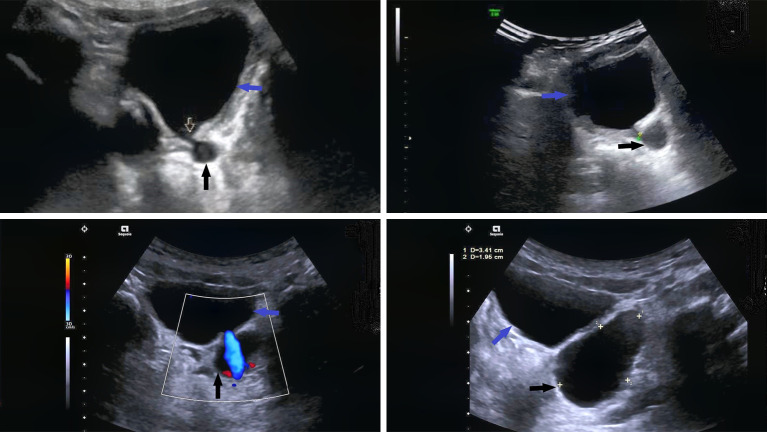
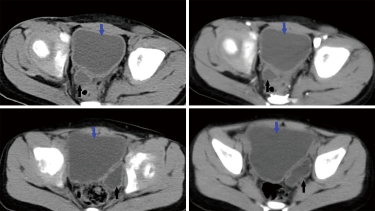
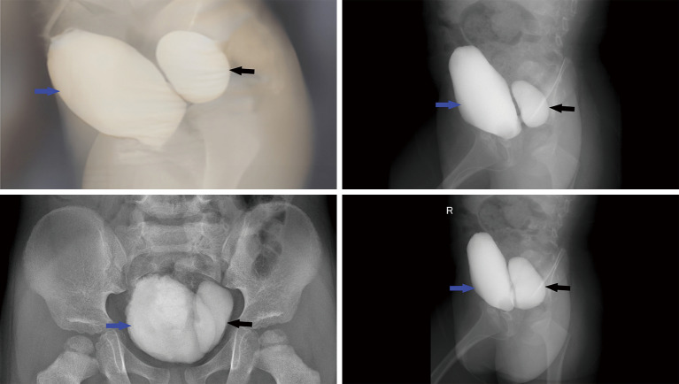
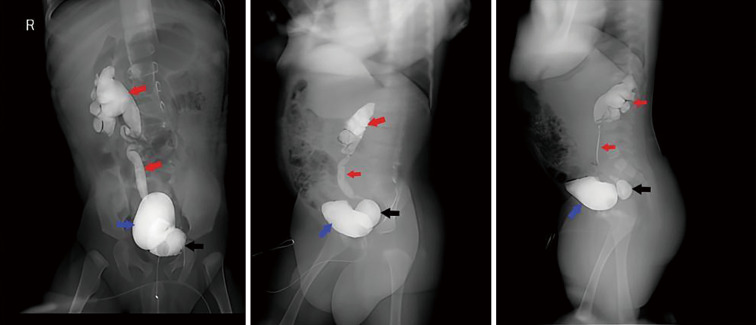
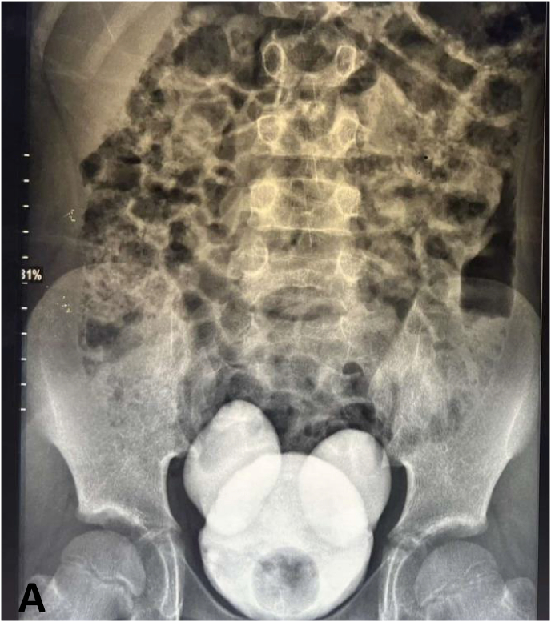

1706 — Túi thừa bàng quang ở trẻ / Pediatric bladder diverticulum
Tags: pattern:tui-thua-bang-quang pattern:thanh-bang-quang-day pattern:tro-nguoc-bang-quang-nieu-quan pattern:u-nuoc-than vung:bang-quang vung:khung-chau protocol:VCUG protocol:SA-than-bang-quang protocol:CT-bang-quang protocol:MRI-bang-quang
Mức chắc chắn (certainty): tổng hợp y văn (literature synthesis) — 1 loạt 10 trẻ có đủ 4 phương thức hình ảnh và đối chiếu mô bệnh (PMC11320504), 2 ca nguyên văn có ảnh (PMC13195786 túi thừa Hutch hai bên; PMC13273907 Hutch khổng lồ kèm VUR), cộng 1 ca túi thừa khổng lồ ở nhũ nhi và 1 ca ở thiếu niên để lấy phổ bệnh cảnh (PMC12107597; PMC12311440). Không có thử nghiệm ngẫu nhiên; chỗ suy luận được đánh dấu rõ.
Câu chốt: Túi thừa bàng quang ở trẻ không phải "một cái bóng nước vô hại". Ba con số quyết định cách đọc: (1) siêu âm chỉ phát hiện 60%, CT 70%, MRI 70%, còn VCUG 100% (PMC11320504); (2) khoảng 90% túi thừa bẩm sinh nằm ngay cạnh lỗ niệu quản nên túi và trào ngược bàng quang–niệu quản (vesicoureteral reflux, VUR) là cặp bài trùng — 5/10 ca trong loạt có VUR độ IV–V; (3) túi nhỏ lại khi bàng quang căng và to ra khi đi tiểu — nên phim chụp lúc đang làm đầy rất dễ "âm tính giả".
1. Tổng quan bệnh học – cơ chế hình ảnh (TẠI SAO)
1.1 Túi thừa thật và túi thừa "giả" khác nhau ở lớp cơ
- Định nghĩa: túi thừa bàng quang (bladder diverticulum) là niêm mạc bàng quang lồi ra ngoài qua lớp cơ detrusor qua một cổ hẹp (PMC11320504).
- Túi thừa bẩm sinh (nguyên phát, primary/congenital): thành túi có sợi cơ trơn của thành bàng quang — mô bệnh ca mổ trong loạt 10 trẻ cho thấy biểu mô trụ/niêm mạc còn lại, mô xơ trên và dưới biểu mô, các bó cơ trơn thưa thớt (PMC11320504). Vị trí điển hình: cạnh lỗ niệu quản (paraureteral, còn gọi túi thừa Hutch), quanh niệu quản (perivesical) hoặc sau–bên (posterolateral).
- Túi thừa mắc phải (thứ phát, acquired): hình thành do tắc nghẽn đường ra kéo dài (van niệu đạo sau, hẹp niệu đạo, bàng quang thần kinh) → áp lực trong lòng bàng quang cao đẩy niêm mạc qua các khe giữa bó cơ; thành túi KHÔNG có sợi cơ, thường nhỏ, nhiều cái, kèm bàng quang trabeculation nặng (PMC11320504).
- Tần suất: túi thừa bàng quang ở trẻ được trích dẫn 1,7% (PMC11320504; PMC9614072); nam trội hơn — cả 10 ca trong loạt đều là bé trai, tuổi 1,5–7 tuổi, trung bình 3,3 tuổi (PMC11320504). Cơ chế được giả định: tắc nghẽn đường ra thoáng qua trong tử cung ở thai nam (góc niệu đạo, nang tuyến Cowper, van niệu đạo sau) (PMC11320504).
- Vị trí: khoảng 90% túi thừa bẩm sinh nằm quanh lỗ niệu quản, 10% ở thành sau–bên; thể sau–bên thường to hơn và có triệu chứng hơn (ứ nước tiểu, nhiễm trùng tái diễn, sỏi) (PMC11320504).
1.2 TẠI SAO hình ảnh lại như vậy — vật lý và cơ học dòng chảy
- Siêu âm: nước tiểu là dịch đồng nhất, không hồi âm → túi thừa là khoang trống âm (anechoic), bờ đều, nằm sát đáy bàng quang/lỗ niệu quản, và điều quan trọng nhất là thấy được kênh/cổ thông với lòng bàng quang (PMC11320504). Vì cổ túi hẹp, kích thước túi thay đổi ngay trong một lần khám khi bàng quang căng/xẹp — đây chính là dấu hiệu động học giúp phân biệt với nang vùng chậu kín (không thay đổi, không có kênh).
- CT: nước tiểu 0–10 HU; túi hiện là bóng dịch sau bàng quang. Trên thì muộn sau tiêm cản quang, thuốc đi từ bàng quang vào túi → chứng minh thông thương bằng hình ảnh, không cần suy đoán (PMC11320504). Thành bàng quang trong ca minh họa dày 8–10 mm — dấu hiệu tăng áp lực đường ra đi kèm.
- MRI: nước tiểu T1 dài (tối), T2 dài (rất sáng); túi có tín hiệu đồng nhất với nước tiểu trong bàng quang ở mọi chuỗi (PMC11320504). Giá trị chính là tương quan với niệu quản, tử cung/trực tràng và cơ nâng hậu môn trước mổ, không phải để "nhìn thấy túi".
- VCUG (voiding cystourethrography): đây là chỗ vật lý dòng chảy quyết định chẩn đoán. Khi làm đầy, bàng quang căng và chèn ép túi → túi nhỏ, có khi không thấy. Khi đi tiểu, áp lực trong bàng quang tăng và cổ túi mở → cản quang tràn vào túi, túi căng to (PMC11320504). Vì vậy chỉ chụp pha làm đầy là bỏ sót; bắt buộc có ảnh thì voiding, tốt nhất thêm thì sau đi tiểu (post-void).
- Vì sao VUR đi kèm: túi thừa Hutch nằm ngay tại lỗ niệu quản, làm mất van niệu quản–bàng quang (đoạn niệu quản trong thành bị kéo vào túi) → trào ngược. Trong loạt 10 ca: 5 ca có VUR, trong đó độ IV–V, kèm ứ nước thận 2 ca (PMC11320504). Một ca Hutch khổng lồ 4 × 4 cm có VUR độ II (PMC13273907).
1.3 Ngưỡng định lượng cần nhớ
| Chỉ số | Số liệu | Nguồn |
|---|---|---|
| Tần suất túi thừa bàng quang ở trẻ | 1,7% | PMC11320504; PMC9614072 |
| Tuổi trong loạt 10 trẻ | 1,5–7 tuổi, trung bình 3,3 tuổi; 10/10 là bé trai | PMC11320504 |
| Vị trí so với lỗ niệu quản | ~90% cạnh/ quanh lỗ niệu quản, ~10% sau–bên | PMC11320504 |
| Độ nhạy từng phương thức | SA 60% · CT 70% · MRI 70% · VCUG 100% (n = 10) | PMC11320504 |
| Túi thừa kèm VUR | 5/10 ca, VUR độ IV–V; ứ nước thận 2/10 | PMC11320504 |
| Độ dày thành bàng quang trong ca minh họa | 8–10 mm | PMC11320504 |
| Kích thước túi trong loạt | 1,7 × 1,5 × 1,4 cm → 5,4 × 3,8 × 3,4 cm | PMC11320504 |
| Túi thừa Hutch khổng lồ | 4 × 4 cm, VUR độ II, bé trai 7 tuổi | PMC13273907 |
| Nguy cơ ung thư trong túi thừa (người lớn) | 0,8–10% túi thừa bàng quang — cực hiếm ở trẻ | PMC9107804 |
2. Mẫu hình + chẩn đoán phân biệt theo vị trí (Gamut)
Mẫu hình cốt lõi: một bóng dịch (nang) nằm sát thành bàng quang, thông với lòng bàng quang bằng cổ hẹp, to ra ở thì đi tiểu.
- Theo vị trí:
- Cạnh lỗ niệu quản (paraureteral / Hutch): hay nhất, kèm VUR, có thể một hoặc hai bên — hai bên cho hình "bàng quang Mickey Mouse" trên VCUG (PMC13195786).
- Sau–bên (posterolateral): túi to, ít liên quan VUR, nhưng chèn ép, ứ nước tiểu, sỏi, nhiễm trùng; trong loạt là 2 ca (PMC11320504).
- Quanh niệu quản (perivesical): 3 ca; lỗ niệu quản nằm cạnh túi chứ không ở trong túi.
- Đỉnh bàng quang: nghĩ di tích ống niệu rốn (urachal remnant) hơn là túi thừa thật — xem mục (5).
- Theo cơ chế: một túi lớn, thành có cơ = bẩm sinh; nhiều túi nhỏ + trabeculation + thành dày = mắc phải do tăng áp lực (van niệu đạo sau, bàng quang thần kinh).
- Theo triệu chứng: nhiễm trùng tiểu sốt, tiểu không tự chủ/tiểu gấp, tiểu máu, bí tiểu, đau bụng/hông lưng; một số hoàn toàn không triệu chứng (PMC11320504; PMC12107597).
3. Bảng so sánh phân biệt (ma trận đối chiếu)
| Thực thể (entity) | Hình ảnh điển hình | Chốt vào (rule-in) | Chốt loại (rule-out) | Gợi ý xác nhận |
|---|---|---|---|---|
| Túi thừa bẩm sinh cạnh lỗ niệu quản (Hutch) | Túi một/bên, cổ hẹp ngay tại lỗ niệu quản; to ở thì voiding; thường kèm VUR | Cổ túi nhìn thấy trên SA + cản quang vào túi ở thì voiding; VUR cùng bên | Túi không có cổ, không đổi kích thước theo thì → nang kín | VCUG thì voiding (chuẩn vàng, 100%); SA để sàng lọc |
| Túi thừa bẩm sinh sau–bên | Túi lớn, thành mỏng, xa lỗ niệu quản, ít VUR | Túi lớn sau–bên + ứ nước tiểu/sỏi trên CT/MRI | Nhiều túi nhỏ + trabeculation → thể mắc phải | CT/MRI có cản quang thì muộn |
| Túi thừa/giả túi do tăng áp lực (van niệu đạo sau, bàng quang thần kinh) | Nhiều túi nhỏ, thành bàng quang dày, trabeculation, bàng quang hình quả lê, không có túi lớn đơn độc | Trabeculation + thành dày + niệu đạo sau giãn trên VCUG; creatinin/ứ nước | Một túi lớn có cổ rõ, thành bàng quang mỏng → bẩm sinh | VCUG thì voiding nhìn niệu đạo sau; siêu âm thận |
| Bàng quang hình quả lê do van niệu đạo sau (PUV) | Bàng quang dài, hẹp dần về cổ, thành dày, không có túi tách rời | Van niệu đạo sau thấy trên VCUG + bàng quang quả lê | Có túi riêng có cổ → túi thừa thật | VCUG thì voiding + nội soi niệu đạo |
| Ureterocele | Cấu trúc nang nằm TRONG lòng bàng quang, "đầu rắn hổ mang", ở lỗ niệu quản | Nang trong lòng + niệu quản giãn phía trên | Túi nằm NGOÀI thành bàng quang → túi thừa | SA + VCUG/CT niệu đồ |
| Nang vùng chậu khác (urachal, nang buồng trứng, nang mạc treo/lymphangioma) | Bóng dịch không thông với bàng quang; vị trí trên đỉnh hoặc sau bàng quang | Không có cổ, không đổi theo thì, không ngấm cản quang từ bàng quang | Có kênh nối + cản quang vào bóng ở thì voiding → túi thừa | MRI T2 + VCUG; mô bệnh nếu mổ |
| Túi niệu đạo (sau tạo hình niệu đạo) | Túi ở niệu đạo dương vật, phồng khi tiểu, tia tiểu mảnh | Vị trí dưới cổ bàng quang + RUG thì voiding đầy túi | Túi ở trên, trong khung chậu → túi thừa bàng quang | RUG/VCUG thì voiding (bài 1702) |

Bốn mặt cắt siêu âm cùng một bệnh nhi: khối nang (mũi tên đen) nằm sau bàng quang (mũi tên xanh), kênh nối nhỏ (mũi tên trắng) mở vào lòng bàng quang; kích thước khối thay đổi ngay trong lần khám tùy mức căng bàng quang. Nguồn: Quant Imaging Med Surg 2024, Fig. 1 — PMC11320504, CC BY-NC-ND 4.0, nguyên bản.
CT không cản quang 4 lát: bóng dịch (mũi tên đen) sau bàng quang (mũi tên xanh), thông với bàng quang; thành bàng quang dày 8–10 mm. Nguồn: PMC11320504, Fig. 2, CC BY-NC-ND 4.0, nguyên bản.Dấu hiệu đọc chuẩn xác trên VCUG
- Thì làm đầy: túi nhỏ lại hoặc biến mất vì bàng quang căng chèn ép → đừng kết luận "không có túi".
- Thì đi tiểu: túi căng to, thấy cổ túi; đây là ảnh chốt chẩn đoán (PMC11320504).
- Hai bên, đối xứng, hai quả "tai" cạnh bàng quang = "bàng quang Mickey Mouse" — túi thừa Hutch hai bên (PMC13195786).
- Luôn đọc niệu đạo sau trong cùng thì voiding: van niệu đạo sau vừa là nguyên nhân giả túi, vừa là bệnh kèm phải xử trí.

Bốn ảnh VCUG: cản quang vào bàng quang (mũi tên xanh) rồi tràn vào túi sau (mũi tên đen) qua cổ túi — bằng chứng thông thương. Nguồn: PMC11320504, Fig. 6, CC BY-NC-ND 4.0, nguyên bản.
Cùng bệnh nhi: túi thừa (mũi tên đen) + trào ngược lên niệu quản và bể thận phải (mũi tên đỏ) — cặp bài trùng Hutch–VUR. Nguồn: PMC11320504, Fig. 7, CC BY-NC-ND 4.0, nguyên bản.4. Protocol chụp + phân loại và chỉ định can thiệp
4.1 Thứ tự hình ảnh (theo độ nhạy thực đo)
- Siêu âm bụng–bàng quang (sàng lọc, không bức xạ): khảo sát lúc bàng quang căng và sau khi đi tiểu, tìm bóng nang + cổ/kênh nối, đo kích thước (mm), xem ứ nước thận hai bên. Độ nhạy chỉ 60% — âm tính không loại trừ (PMC11320504).
- VCUG có thì đi tiểu (chuẩn vàng): đặt catheter, bơm cản quang, chụp AP + chếch + nghiêng, bắt buộc ảnh đang đi tiểu và sau đi tiểu; ghi độ VUR và hình thái niệu đạo sau. Độ nhạy 100% trong loạt 10 ca (PMC11320504).
- CT hoặc MRI khi cần mổ: đánh giá kích thước, số túi, tương quan lỗ niệu quản, thành bàng quang, và đường mổ; CT có cản quang thì muộn cho thấy thuốc vào túi; MRI (T2) tốt cho mô mềm và tránh bức xạ ở trẻ (PMC11320504).
- Niệu động học (urodynamics) khi nghi bàng quang thần kinh/rối loạn tống xuất; nội soi bàng quang khi cần xác định lỗ niệu quản nằm trong hay cạnh túi trước khi quyết định cấy lại niệu quản.
- Xét nghiệm: tổng phân tích nước tiểu + cấy khi có triệu chứng; creatinin nếu ứ nước hai bên.
4.2 Phân loại dùng trong thực hành
- Theo liên quan lỗ niệu quản: cạnh lỗ niệu quản (paraureteral/Hutch) · quanh niệu quản (perivesical) · sau–bên (posterolateral) — cách phân loại này quyết định có phải cấy lại niệu quản hay không (PMC11320504).
- Theo nguồn gốc: bẩm sinh (thành có cơ) vs mắc phải (không cơ, nhiều túi nhỏ) — quyết định điều trị nguyên nhân tắc nghẽn thay vì chỉ cắt túi.
- Chỉ định mổ (PMC11320504; PMC13273907): bí tiểu/tắc nghẽn do túi, nhiễm trùng tiểu tái diễn, sỏi trong túi, tiểu máu, ứ nước thận, VUR độ cao kèm lỗ niệu quản trong túi, túi khổng lồ chèn ép.
- Theo dõi không mổ: túi tình cờ, không triệu chứng → siêu âm Doppler màu hằng năm + tổng phân tích nước tiểu (PMC11320504); một ca túi khổng lồ ở thiếu niên được theo dõi ổn định khi gia đình từ chối mổ (PMC12311440) — nhưng đây là lựa chọn cá biệt, không phải chuẩn.
4.3 Sơ đồ quyết định
flowchart TD
A[Túi thừa bàng quang ở trẻ] --> B{Có triệu chứng hoặc biến chứng}
B -->|Không| C[Siêu âm Doppler màu + tổng phân tích nước tiểu hằng năm]
B -->|Có| D[VCUG thì đi tiểu — đọc VUR và niệu đạo sau]
D --> E{Lỗ niệu quản nằm trong túi hoặc VUR độ IV–V}
E -->|Có| F[Cắt túi + cấy lại niệu quản]
E -->|Không| G[Cắt túi đơn thuần — nội soi trong lòng bàng quang hoặc nội soi ổ bụng]
F --> H[Theo dõi 10 tháng đến 2 năm — siêu âm và VCUG kiểm tra]
G --> H
4.4 Kết quả phẫu thuật trong loạt 10 trẻ
- 10/10 mổ thành công; thì gian mổ 83–290 phút, trung bình 207 phút; gồm cắt túi nội soi ổ bụng và cắt túi qua lòng bàng quang, ca có VUR được cấy lại niệu quản (PMC11320504).
- Theo dõi 10 tháng – 2 năm: hết tiểu không tự chủ và bí tiểu, không còn nhiễm trùng tiểu, siêu âm không còn túi, VCUG không còn túi và không còn VUR (PMC11320504).
5. Biến thể bình thường và cạm bẫy
- Cạm bẫy 1 — chỉ chụp pha làm đầy: túi xẹp khi bàng quang căng, dễ kết luận âm tính. Bắt buộc ảnh thì voiding (PMC11320504).
- Cạm bẫy 2 — gọi mọi "túi" là Hutch: van niệu đạo sau và bàng quang thần kinh tạo nhiều giả túi nhỏ + trabeculation; gọi nhầm là Hutch sẽ mổ túi mà bỏ nguyên nhân tắc nghẽn → tái phát. Đọc kỹ niệu đạo sau và độ dày thành bàng quang.
- Cạm bẫy 3 — "bàng quang Mickey Mouse" bị đọc thành bàng quang đôi: hai túi Hutch hai bên tạo hai "tai" đối xứng; bàng quang đôi thật có vách ngăn trong lòng — phân biệt bằng VCUG + nội soi, không dựa vào bóng trên phim (PMC13195786).
- Cạm bẫy 4 — nang vùng chậu "giả túi": nang ống niệu rốn, nang buồng trứng, nang mạc treo không có cổ, không đổi kích thước theo thì, không ngấm cản quang từ bàng quang. Nếu chỉ có siêu âm, dễ mổ nhầm; cần VCUG hoặc CT/MRI thì muộn.
- Cạm bẫy 5 — bỏ sót VUR đối bên: túi to một bên có thể che/đổi hướng dòng; luôn chụp cả hai bên và ghi độ VUR theo phân độ quốc tế.
- Cạm bẫy 6 — thoả mãn tìm kiếm (satisfaction of search): thấy túi rồi dừng, bỏ sỏi trong túi, ứ nước thận, van niệu đạo sau, túi thừa thứ hai.
- Biến thể bình thường dễ nhầm: bàng quang căng đầy tạo góc nhọn giả túi ở đáy; bóng ruột chứa dịch cạnh bàng quang; túi thừa rất nhỏ (< 1 cm) không triệu chứng — không can thiệp, chỉ theo dõi.
- Biến chứng cần nhớ (hiếm nhưng nặng): vỡ túi thừa tự phát gây đau bụng cấp, dịch ổ bụng (đã báo ở người lớn, PMC10460264); ung thư trong túi thừa chiếm 0,8–10% túi thừa ở người lớn, hầu như không gặp ở trẻ — không dùng con số này để chỉ định cắt túi ở trẻ không triệu chứng (PMC9107804).
6. Tự lượng giá — Blind Quiz
Ca 1 — Bé trai 3 tuổi, sốt, đái buốt tái diễn. Siêu âm bàng quang:
- Gợi ý lâm sàng: nhiễm trùng tiểu sốt tái diễn, không có bí tiểu.
- Câu hỏi: Khối nang nằm ở đâu? Có dấu hiệu gì chứng minh nó thông với bàng quang? Ba chẩn đoán phân biệt?
Bấm để hiện đáp án (findings + chẩn đoán)
- Dấu hiệu: khối trống âm sau bàng quang, có kênh/cổ nối với lòng bàng quang (mũi tên trắng); kích thước thay đổi khi bàng quang căng/xẹp.
- Chẩn đoán: túi thừa bàng quang bẩm sinh (thể quanh/cạnh lỗ niệu quản).
- Phân biệt: nang ống niệu rốn (đỉnh bàng quang, không cổ) · nang buồng trứng/nang mạc treo (không cổ) · ureterocele (nang trong lòng bàng quang).
- Bước tiếp: VCUG có thì đi tiểu — đây là phương thức duy nhất đạt 100% trong loạt (PMC11320504).
- Nguồn ảnh: Quant Imaging Med Surg 2024, Fig. 1 — PMC11320504, CC BY-NC-ND 4.0.
Ca 2 — Bé trai 5 tuổi, tiểu máu + đau hông lưng. VCUG dưới đây:
- Câu hỏi: Hai cấu trúc cản quang là gì? Vì sao phải chụp thì đi tiểu mới thấy rõ? Nếu chỉ chụp lúc bơm đầy thì sai thế nào?
Bấm để hiện đáp án
- Dấu hiệu: bàng quang (mũi tên xanh) + túi thừa (mũi tên đen) đổ đầy qua cổ hẹp ở thì voiding.
- Vì sao: khi làm đầy, bàng quang căng chèn ép túi → túi nhỏ/không thấy; khi đi tiểu, áp lực trong bàng quang tăng, cổ túi mở → túi căng to.
- Sai lầm thường gặp: chỉ chụp pha làm đầy → âm tính giả, bỏ sót túi và bỏ sót VUR.
- Nguồn ảnh: PMC11320504, Fig. 6, CC BY-NC-ND 4.0.
Ca 3 — Bé trai 7 tuổi, khối vùng bẹn tái diễn + tiểu ít. VCUG:
- Câu hỏi: Ngoài túi thừa, có bất thường gì ở đường tiết niệu trên? Điều đó thay đổi chỉ định mổ thế nào?
Bấm để hiện đáp án
- Dấu hiệu: túi thừa (đen) + VUR lên niệu quản và bể thận phải (đỏ) — trào ngược độ cao.
- Ý nghĩa: túi thừa Hutch làm mất cơ chế van tại lỗ niệu quản → VUR; VUR độ IV–V kèm lỗ niệu quản trong túi là chỉ định cắt túi + cấy lại niệu quản, không chỉ cắt túi đơn thuần (PMC11320504; PMC13273907).
- Theo dõi sau mổ: siêu âm + VCUG kiểm tra; loạt 10 ca không tái phát, hết VUR trong 10 tháng – 2 năm.
- Nguồn ảnh: PMC11320504, Fig. 7, CC BY-NC-ND 4.0.
Ca 4 — Bé trai 11 tuổi, tiểu khó, không sốt. VCUG lúc bàng quang vừa đầy một nửa:

- Câu hỏi: Mô tả hình dạng bàng quang. Chẩn đoán? Phân biệt với bàng quang đôi bằng cách nào?
Bấm để hiện đáp án
- Dấu hiệu: bàng quang trung tâm + hai túi thừa đối xứng hai bên ở vùng lỗ niệu quản → "bàng quang Mickey Mouse" (PMC13195786).
- Chẩn đoán: túi thừa Hutch hai bên; ca này không có VUR, nhưng có detrusor overactivity + rối loạn đồng vận cơ thắt trên niệu động học.
- Phân biệt bàng quang đôi: bàng quang đôi thật có vách ngăn trong lòng; túi thừa Hutch là hai túi ngoài thành có cổ — xác nhận bằng nội soi bàng quang.
- Nguồn ảnh: Urol Case Rep 2026, Fig. 2A — PMC13195786, CC BY-NC-ND 4.0.
Bài liên quan chéo
- 1702 – Túi niệu đạo sau tạo hình niệu đạo ở trẻ — cùng "túi" nhưng dưới cổ bàng quang, RUG thì voiding.
- 691 – Soi bàng quang và soi quanh catheter ở trẻ — kỹ thuật soi và đọc lỗ niệu quản.
- 635 – Dị tật tiết niệu nhi: SFU, VUR, PUV — phân độ VUR và van niệu đạo sau.
- 671 – Nhiễm trùng tiểu ở trẻ bàng quang thần kinh — chỉ định VCUG sau nhiễm trùng tiểu sốt.
- 1705 – Theo dõi tiết niệu sau cắt u quái cùng cụt — bàng quang thần kinh và tồn lưu.
- 600 – Tổng quan Nhi khoa
Không dùng để chẩn đoán độc lập khi chưa có người hướng dẫn.